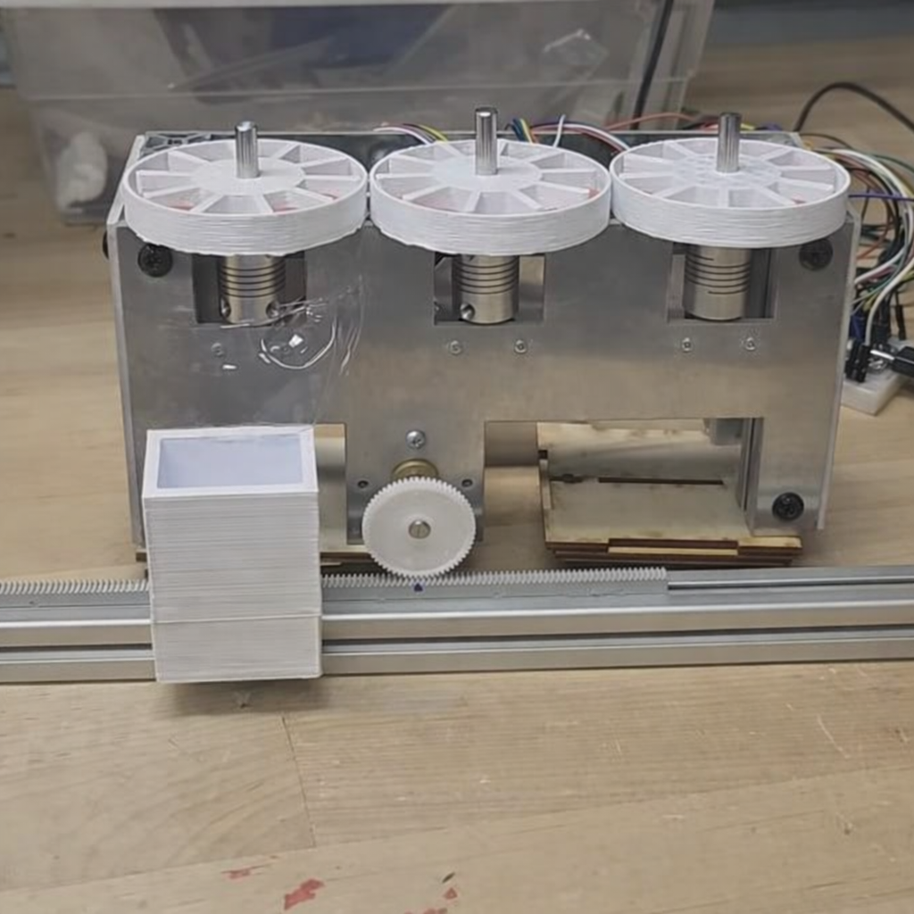

Automated Pill Dispenser (ME102B)

Overview
Designed and built an automated pill dispensing system as part of ME102B. The system improves medication adherence by accurately dispensing pills at scheduled intervals.
Key Contributions
- Mechanical design and CAD modeling
- System integration and assembly
- Design for reliability and user safety
Report
View Full Project Report (PDF)
← Back to Home